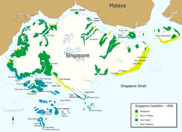
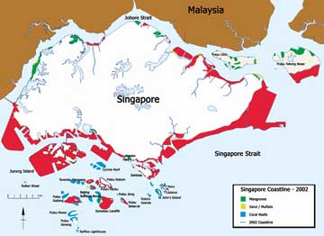
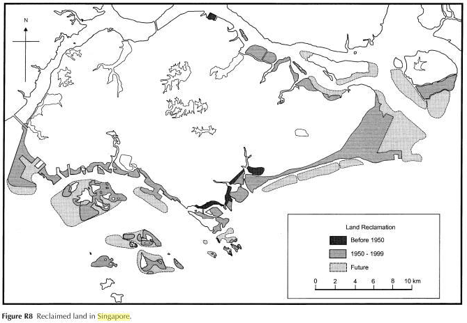
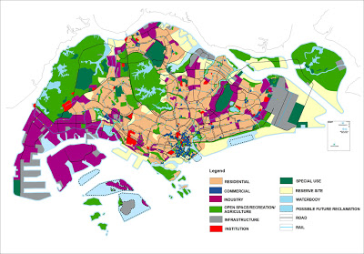
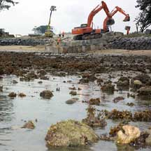
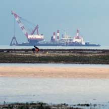
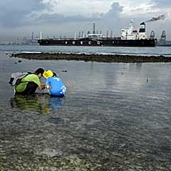
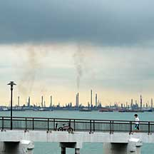
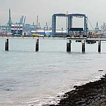
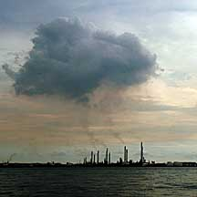

|
|
| index of concepts |
| Loss
of coastal ecosystems updated Dec 2019 How much have we lost? Land reclamation which increased Singapore's land area by 17% has buried much of Singapore's coasts. Most of our natural sandy shores have been lost to reclamation. Construction of reservoirs by damming rivers and draining wetlands have also badly affected the habitats near river mouths and on intertidal shores. These have reduced coastal ecosystems drastically. Mangrove forest cover has been reduced from an estimated 13% in the 1820's to only 0.5% of the total land area. Many of the original 60 offshore islands and patch reefs around Singapore have been reclaimed. Some were merged into larger islands. Since 1986, most coral reefs in Singapore have lost up to 65% of their live coral cover. |
 Singapore's coastline in the 1950's  Singapore's coastline in 2002 from Singapore Waters: Unveiling our Seas  Past and future reclamation works from Encyclopedia of Coastal Science by Maurice L. Schwartz  Singapore for a planned population of 6.9 million by 2030 from the Ministry of National Development, Jan 2013 more about the shores lost in this plan. |
| The massive changes to our shoreline means than many of our coastal areas are no longer complete ecosystems. The original habitats are fragmented and separated from one another. Animals at the top of the food chain have long since disappeared affecting the balance in the remaining habitats. For example, we no longer have tigers in our mangroves. And animals such as crocodiles are no longer common. Dugongs, dolpins and sea turtles are also less commonly seen. |
 Reclamation of reefs at Sentosa for the Integrated Resort. Sentosa, Jul 07 |
 Massive dredging off Cyrene Reef Cyrene Reef, Aug 08 |
 Major shipping lanes near our shores. Cyrene Reef, Nov 08 |
| High levels of coastal activity (shipping, dredging and continued reclamation and coastal construction) also contributes to sedimentation, or murky waters. While visibility underwater in the 1960s was 10m, nowadays, this has been reduced to 2m or less. Sediment in the water reduces the light penetration into the water. This affects photosynthesis by seagrasses and other plants, as well as corals which rely on their symbiotic algae for products of photosynthesis. |
 Petrochemical plants on Pulau Bukom from Labrador, Nov 08 |
 Major reclamation works next to Labrador shore. Labrador, Nov 08 |
 The petrochemical plants on Pulau Bukom taken from Pulau Jong. from Pulau Jong, Nov 08 |
| But this does NOT mean that all our shores are dead. The remaining
shores are still very much alive. It is not yet too late to protect
and preserve them. From Hugh Tan et. al., "Conservation of marine habitats still lags behind somewhat compared to the efforts on land, although this is not from want of trying. We have yet to establish a Marine Protected Area despite many attempts to do so. The main reason is that the southern shores, where most of the best reefs are located, are also the hub of our important shipping activities and our growing port facilities, Singapore being the world's busiest port." |
| Photos of threats to Singapore shores |
On wildsingapore flickr photos for free download. |
Links
Media articles
References
|